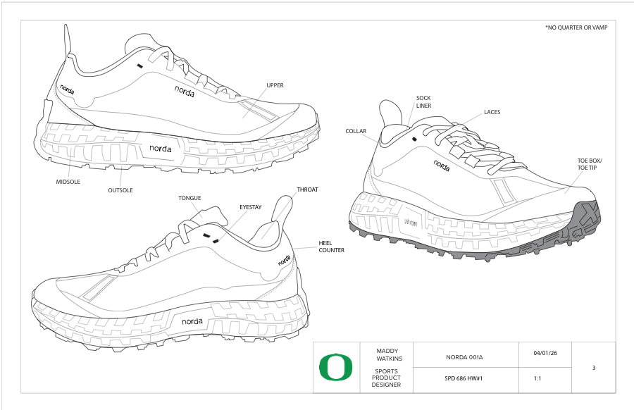

Footwear / Technical Sketching / 1:1 Study
Technical Footwear Sketches
StudiesLasts + shoe sketches
ModelsNorda 001A / La Sportiva Prodigio Pro
Scale1:1
Technical footwear sketch studies focused on last views, proportion, construction details, and annotated shoe components.
The set includes lateral and medial last studies alongside Norda 001A and La Sportiva Prodigio Pro sketch plates.
Sketch Plates
Lateral, medial, Norda, and La Sportiva studies
